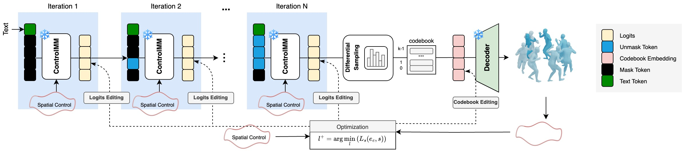

ControlMM: Controllable Masked Motion Generation
Ekkasit Pinyoanuntapong1, Muhammad Usama Saleem1, Korrawe Karunratanakul2, Pu Wang1, Hongfei Xue1, Chen Chen3, Chuan Guo4, Junli Cao1, Jian Ren1, Sergey Tulyakov1
1University of North Carolina at Charlotte, 2ETH Zurich, 3University of Central Florida, 4Snap Inc.
Abstract
Recent advances in motion diffusion models have enabled spatially controllable text-to-motion generation. However, despite achieving acceptable control precision, these models suffer from generation speed and fidelity limitations. To address these challenges, we propose ControlMM, a novel approach incorporating spatial control signals into the generative masked motion model. ControlMM achieves real-time, high-fidelity, and high-precision controllable motion generation simultaneously. Our approach introduces two key innovations. First, we propose masked consistency modeling, which ensures high-fidelity motion generation via random masking and reconstruction, while minimizing the inconsistency between the input control signals and the extracted control signals from the generated motion. To further enhance control precision, we introduce inference-time logit editing, which manipulates the predicted conditional motion distribution so that the generated motion, sampled from the adjusted distribution, closely adheres to the input control signals. During inference, ControlMM enables parallel and iterative decoding of multiple motion tokens, allowing for high-speed motion generation. Extensive experiments show that, compared to the state of the art, ControlMM delivers superior results in motion quality, with better FID scores (0.061 vs 0.271), and higher control precision (average error 0.0091 vs 0.0108). ControlMM generates motions 20 times faster than diffusion-based methods. Additionally, ControlMM unlocks diverse applications such as any joint any frame control, body part timeline control, and obstacle avoidance.Comparison of FID score, spatial con- trol error, and motion generation speed (circle size) for our accurate and fast models comparing to state-of-the-art models. The closer the point is to the origin and the smaller the circle, the better performance.
Method
Compared to SOTA - Multiple Joints
a person crosses their arms for chest fly
ControlMM (our)
OmniControl
a person jumps in the air once
ControlMM (our)
OmniControl
a person walks in a circle clockwise
ControlMM (our)
OmniControl
a person walks forward and waves his hands
ControlMM (our)
OmniControl
Compared to SOTA - Pelvis Only
a person walks forward and waves his hands
ControlMM (our)
GMD
a person dances to salsa music
ControlMM (our)
GMD
a person walks forward and come back to the same position from where we started
ControlMM (our)
GMD
Dense Signals
the person draws a heart with hand
person walks down and up in a figure 8 pattern
A figure walks forward in a zig zag pattern
a person waves both his arms
someone is lifting something up
a person is doing pullups
a person dances to salsa music
a person stands and waving
person is doing squats
a person stands and bows
a man walks in a curved line with his hands at his sides
person is walking as if injured
a person walks through queue
a person walks with support
the person walks in a oval anticlockwise while waving hands
a person walks
a person walks in a circle
a person walks forward carrying something
Sparse Signals
A person walks forward with their hands up in a surrender pose
person walks over and sits down in a chair.
A person jumps and kicks a football in the air with their head
a person walks slowly
A person walks forward, casually greeting others with a wave or hello
A person walks forward and raises both arms high.
a man walks left and right
A person walks forward giving a high five
A person walks, pauses, and performs a high kick in the air.